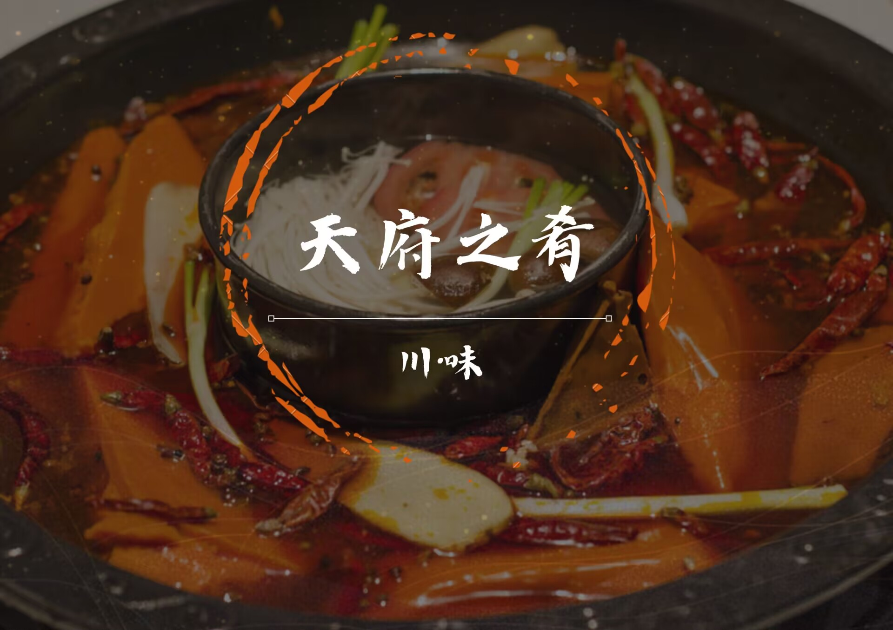
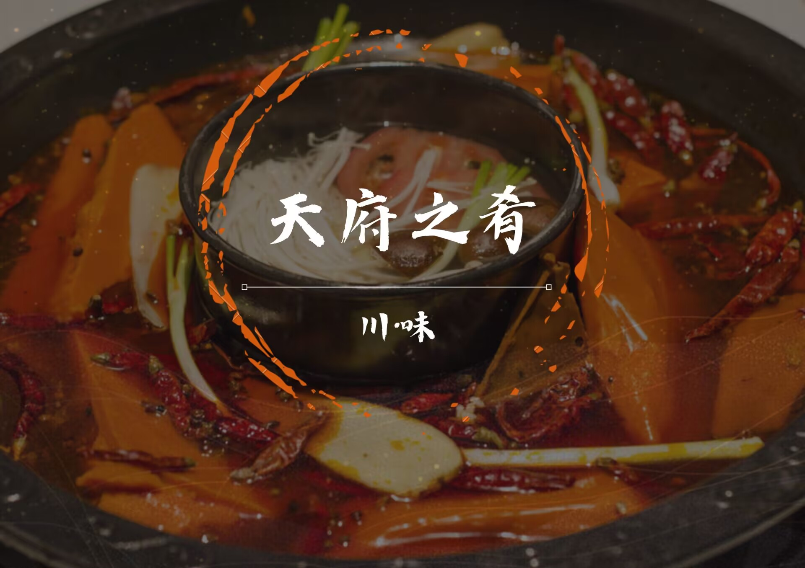

天府佳肴
>>>>>>>>>>>健康-美味-正宗<<<<<<<<<<<

舌尖上的川菜，心尖上的旺池
漫洒鸳锅椒一斗，灼息翻滚乱丝柳。汹汹沸水血红浪，铁碗盛来当烈酒。
川菜是中国汉族传统的四大菜系之一、中国八大菜系之一。川菜有着本土川菜与海派川菜之分，本土川菜中，四川菜系又包括川味菜肴、面点小吃、火锅等。 川菜分为三派：蓉派（上河帮）、渝派（下河帮）、盐帮派（小河帮）。上河帮川菜即以川西成都、乐山为中心地区的川菜； 小河帮川菜即以川南自贡为中心的盐帮菜，同时包括宜宾菜、泸州菜和内江菜。下河帮川菜即以老川东地区达州菜、重庆菜、万州菜为代表的江湖菜。 三者共同组成川菜三大主流地方风味流派分支菜系，代表川菜发展最高艺术水平。 川菜以取材广泛，调味多变，菜式多样，口味清鲜，醇浓并重，以善用麻辣调味著称，并以别具一格的烹调方法和浓郁的地方风味闻名，融会了东南西北各 方的特点，博采众家之长，善于吸收和创新。